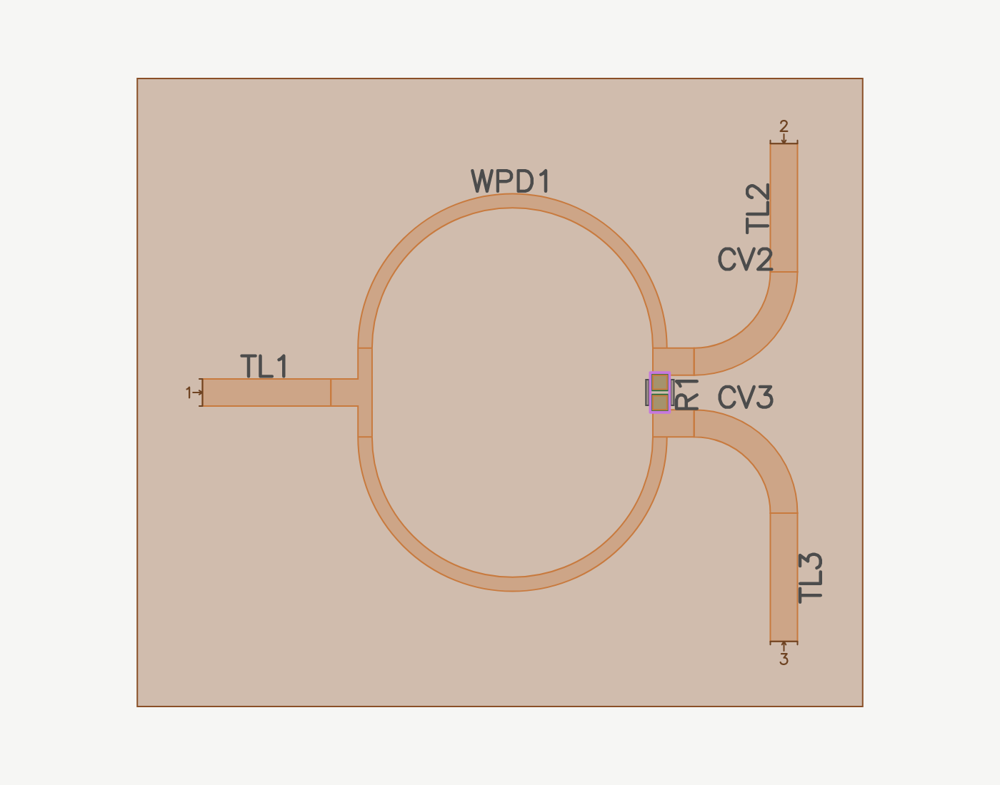
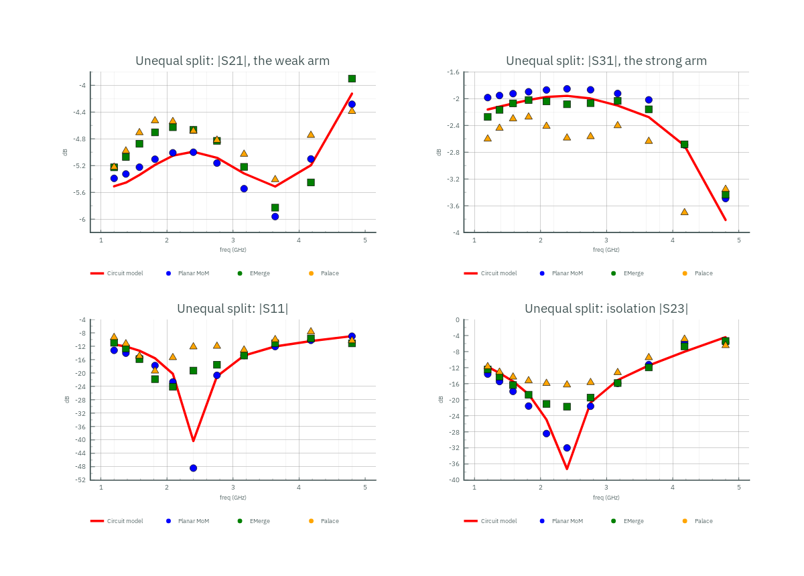

Dividers and Couplers
A 2.4 GHz Wilkinson divider placed as one part from its specs on 20 mil RO4350B, laid out by Update Layout with its 0402 isolation resistor across the ring, and solved by Planar MoM, EMerge and Palace against its circuit model; with its unequal-split and two-section broadband variants and a four-way tree.
File ▸ New ▸ Examples ▸ Dividers and Couplers copies this workspace to a folder you choose and opens it on this README. Every example is listed in Example Workspaces.
RF dividers and couplers placed as single parts, each stated by its specifications and drawn from the same plan its circuit model simulates. One cell per component. Today the workspace holds the Wilkinson divider: an MWPD at 2.4 GHz on a 20 mil RO4350B board, laid out by Update Layout from Schematic and solved on the Planar MoM solver, EMerge and Palace against its circuit model. Beside it are the same part's two variants on the same board and bench, an unequal split and a two-section broadband divider, each solved the same three ways, and a four-way tree of two-way dividers, each in a section of its own below.

The cells
| Cell | Views | What it is |
|---|---|---|
| Wilkinson | schematic, layout, EM setup, 3D view | The test bench and the board: a 5 mm input line, the MWPD, a 100 Ω resistor with an 0402 land pattern on R2-R3, and each output bending away through a 90° MCURVE and a 5 mm line to its port |
| Unequal | schematic, layout, EM setup, 3D view | The same bench with K = 1.4142, so port 3 takes twice port 2's power, and a 106.07 Ω resistor |
| Broadband | schematic, layout, EM setup, 3D view | The same bench with N = 2 over an octave: two sections and two resistors, 242.14 Ω and 97.69 Ω |
| FourWay | schematic, layout | Three equal-split MWPDs in a tree, ports 2 to 5 on the second stage's outputs |
How it was built
- Schematic.
WPD1is an MWPD withZ050 Ω,F2.4 GHz andGap1.35 mm, the 0402's pin span. Nothing else is typed: select it, and its parameters show what the board makes of those specs — a 1.05768 mm port width, 0.548 mm arms of 70.7 Ω, a quarter wave of 18.903 mm and a ring radius of 5.743 mm.R1is 100 Ω, 2·Z0, withFootprintsmt:0402, dropped on the symbol's R2-R3 pins. The lines use the VARW50, set to the readout's port width exactly, so they meet the divider's pins with no step in the copper. - Why the outputs bend away. The divider's two output pins are only Gap + W apart, 2.4 mm centre to centre. The Planar solver calibrates each port on an isolated line and refuses a port with another port's metal closer than five substrate heights, so each output turns 90° away and runs 5 mm before its port. A board would route them apart anyway.
- Design ▸ Update Layout from Schematic. It places the ring, lays the 0402 across the ring's gap, chains the lines
on, puts the three ports at the line ends and pours the ground plane on Bottom Copper. LVS matches
(
circuitrf lvs Wilkinson). - EM setups.
Wilkinson/em/Wilkinson Planar.cemis the Planar setup. Design ▸ New 3D View from Layout made the 3D view, which has two setups, Palace and EMerge. All three nameR1as a component port.
Run it
| Step | What | Time here |
|---|---|---|
| 1 | Simulate the schematic | under a second |
| 2 | Simulate the EM setup Wilkinson Planar | about 4½ min |
| 3 | Open the 3D view, run setup EMerge | about 1 min |
| 4 | Run setup Palace in the same view | about 2 min |
Times are from a shared Linux server, 8 threads for Planar and EMerge, and 8 Palace processes on one compute node. The
first 3D run offers to install its solver. The three Touchstone files the runs write are in results/, so the comparison
below can be read without running anything.
The resistor and the EM runs
Each EM run has the resistor as a component port. The ring joins R2 to R3 the long way round, so the 0402's two
pads lie on one piece of copper, and the port across them closes a loop. At RF that is an ordinary port. Each run warns
that the port's 0 Hz row would read the ring's copper, close to a short; this sweep has no 0 Hz point. Each result is a
four-port: ports 1 to 3, and R1 as port 4. The co-simulation netlist each run writes (<setup>_cosim.cnl) closes
port 4 with the 100 Ω. The EM numbers below are that closed three-port, against the circuit model with its 100 Ω.
Driven from port 1, the resistor carries no current: the two arms are mirror images, so R2 and R3 sit at the same voltage, and |S11|, |S21| and |S31| hardly depend on it. The isolation, |S23|, is what the resistor sets.
What you will see

At 2.4 GHz, each EM result with port 4 closed by 100 Ω:
| Circuit model, 100 Ω | Planar MoM | EMerge | Palace | |
|---|---|---|---|---|
| |S11| | −47.5 dB | −28.2 dB | −24.6 dB | −23.5 dB |
| |S21| | −3.149 dB | −3.113 dB | −3.130 dB | −3.163 dB |
| |S31| | −3.149 dB | −3.113 dB | −3.137 dB | −3.183 dB |
| |S23| | −36.4 dB | −29.2 dB | −25.1 dB | −18.6 dB |
Across 1.2 to 4.8 GHz, eleven points from F/2 to 2F:
| Planar MoM | EMerge | Palace | |
|---|---|---|---|
| Largest difference in |S21| from the circuit model | 0.06 dB | 0.21 dB | 0.44 dB |
| Largest difference in |S31| from the circuit model | 0.06 dB | 0.30 dB | 0.54 dB |
| Worst |S11| in the band (circuit model −9.1 dB) | −8.9 dB | −9.9 dB | −7.8 dB |
| Deepest |S11| of the eleven points | 2.40 GHz | 2.09 GHz | 2.40 GHz |
| Deepest |S23| of the eleven points (circuit model −36.4 dB at 2.40 GHz) | −29.2 dB at 2.40 GHz | −27.5 dB at 2.09 GHz | −20.4 dB at 2.09 GHz |
| Largest difference in |S23| outside 2.0 to 2.8 GHz | 2.3 dB | 2.0 dB | 3.4 dB |
All three solvers put |S21| within 0.04 dB of the model at 2.4 GHz. The model's |S21| of −3.149 dB is the ideal −3.01 dB plus about 0.14 dB of conductor and dielectric loss in the arms and the 10 mm of line. Planar follows the model within 0.06 dB across the whole band. Its |S11| null is where the model's is, but 28 dB deep rather than 47 dB: a deep null is a small difference of two large numbers, and a few hundredths of a dB of arm loss or junction reactance moves it.
The isolation is a null too, and the solvers find it less deep than the model. Planar puts it at 2.4 GHz, 29 dB down rather than 36. EMerge and Palace put it lower, at the 2.09 GHz point, and shallower. Away from the null all three follow the model's |S23| within 2 to 3.4 dB. The null needs the resistor's path and the ring's to cancel exactly, and in 3D much of its shift is the coarse mesh: with about twice the tetrahedra and the same setups otherwise (1.8 to 3.0 GHz, 7 points), EMerge reads −31.6 dB at 2.2 GHz and −29.4 dB at 2.4 GHz and Palace −24.7 and −21.7 dB, so both nulls move up to between 2.2 and 2.4 GHz and deepen, though neither reaches the model's −36.4 dB.
The 3D runs read further from the model away from 2.4 GHz, Palace most. Both use coarse meshes (below), and in 3D each port is a lumped sheet from the line down to the ground plane, 20 mil tall, whose own inductance stays in the answer. Palace's |S21| and |S31| also differ from each other by up to 0.14 dB on a layout that is symmetric: its draft mesh is not. Its |S11| is 3 to 7 dB worse than the model's from 1.2 to 3.6 GHz, the null aside. EMerge's four-port is not quite passive: at 4 of the 11 points the largest singular value of S is above 1, at most 1.0037, and the run says so.
The model warns, and it should. The run's Messages say that MTEE's junction formulas are calibrated at εr 9.9 and this board is 3.66, that the tee's branch is a little wider than their W/h range, and that the ring's bend radius, 10.5 widths, is past the 3 to 7 widths MCURVE's length rule is stated for. At 2.4 GHz none of this moves |S21| by more than the solvers disagree with one another.
Run times and meshes
| Mesh | Unknowns | Wall time | Peak memory | |
|---|---|---|---|---|
| Circuit model | — | — | under a second | — |
| Planar MoM | 2,944 cells | 5,290 | 4 min 24 s | 1.4 GB |
| EMerge | 11,053 tetrahedra | 80,114 | 49 s | 1.7 GB |
| Palace | 78,748 tetrahedra | 101,692 | 1 min 37 s | 2.7 GB |
The meshes are the same settings as before the resistor was a port; the port's strip (Planar) and sheet (3D) are new geometry, so each solver meshed slightly differently.
What was traded for speed
- Planar: edge mesh off, and
"LocalGrid": false. The local grid sizes its cells from the sweep's top frequency, so with it on the mesh, and the answer, would change if the band changed. - EMerge: the Draft preset, no adaptive mesh passes, and its adaptive frequency sweep.
- Palace: the Draft preset and
AdaptiveMaxIterations0 — one solve on the initial mesh, no refinement — with its adaptive frequency sweep, built from 4 full solves. - The 3D air box is 5 mm on the sides and the top, about ten substrate heights.
- Eleven log-spaced points from 1.2 to 4.8 GHz, F·2^(k/5) for k = −5 … 5, so 2.4 GHz is one of them.
The unequal split
Unequal is the Wilkinson bench with K = 1.4142 on WPD1: port 3 takes twice the power port 2 does, 3.01 dB more.
The readout gives the arms as 102.99 Ω to port 2 (0.202 mm wide) and 51.49 Ω to port 3 (1.006 mm), the transformers on
the outputs as 59.46 Ω and 42.05 Ω, and the resistor as Z0·(K + 1/K) = 106.07 Ω, which R1 is. The two arms' quarter
waves differ, 19.353 mm against 18.497 mm, so the input tee's straight runs differ (1.939 and 1.588 mm) and the
resistor's gap sits 0.49 mm above the input's line; the outputs leave through their transformers, and the same bends
and lines take them to ports 2 and 3. Update Layout joined 7 of 7 connections; LVS matches.

EM
The setups are the Wilkinson's, with one change on Planar: 2 cells across a conductor rather than the default 4. The
arm to port 2 is 0.24 mm wide once the solver grows it for the copper's thickness, and on a shared grid 4 cells across
it would set a 2.4 mil cell over the whole board: 51,952 unknowns and about 100 GB at each frequency. At 2 cells across
it is 13,552 unknowns and 7.5 GB. R1 is a component port in all three, closed with its 106.07 Ω.

At 2.4 GHz, each EM result with R1's port closed by 106.07 Ω:
| Circuit model | Planar MoM | EMerge | Palace | |
|---|---|---|---|---|
| |S11| | −40.3 dB | −48.4 dB | −19.3 dB | −12.2 dB |
| |S21| | −4.993 dB | −5.000 dB | −4.666 dB | −4.683 dB |
| |S31| | −1.958 dB | −1.853 dB | −2.084 dB | −2.587 dB |
| P3/P2 (3.01 dB asked for) | 3.04 dB | 3.15 dB | 2.58 dB | 2.10 dB |
| |S22| | −36.6 dB | −30.0 dB | −28.6 dB | −18.4 dB |
| |S33| | −31.2 dB | −33.6 dB | −24.9 dB | −15.7 dB |
| |S23| | −37.2 dB | −32.0 dB | −21.7 dB | −16.3 dB |
Across 1.2 to 4.8 GHz, the same eleven points as the Wilkinson's:
| Planar MoM | EMerge | Palace | |
|---|---|---|---|
| Largest difference in |S21| from the circuit model | 0.45 dB | 0.49 dB | 0.66 dB |
| Largest difference in |S31| from the circuit model | 0.32 dB | 0.38 dB | 1.00 dB |
| Deepest |S11| of the eleven points (circuit model −40.3 dB at 2.40 GHz) | −48.4 dB at 2.40 GHz | −24.1 dB at 2.09 GHz | −19.4 dB at 1.82 GHz |
| Deepest |S23| of the eleven points (circuit model −37.2 dB at 2.40 GHz) | −32.0 dB at 2.40 GHz | −21.7 dB at 2.40 GHz | −16.3 dB at 2.40 GHz |
Planar agrees with the model. It divides 3.15 dB where the model divides 3.04 and 3.01 was asked for, its |S21| is the model's within 0.01 dB at 2.4 GHz, and its input and isolation nulls fall at 2.4 GHz with the model's. Away from F the two read the same curves within half a dB.
The two 3D runs send port 2 more than the design asks, EMerge 0.5 dB and Palace 0.9 dB, across the whole band, and their nulls are shallow. Both use the Draft preset the Wilkinson's do, and here that mesh has to resolve a 0.2 mm line, little more than a third of the Wilkinson's 0.55 mm arm; but EMerge at its Standard preset (22,608 tetrahedra) divides 2.67 dB rather than 2.58, so the mesh is not the whole of it. Where the rest comes from is not known yet: each 3D port is a 20 mil lumped sheet, and the thin arm is the one line here whose copper is a sizable fraction of its width.
| Mesh | Unknowns | Wall time | Peak memory | |
|---|---|---|---|---|
| Planar MoM | 7,280 cells | 13,552 | 34 min 29 s | 7.1 GB |
| EMerge | 13,349 tetrahedra | 96,146 | 48 s | 2.0 GB |
| Palace | 100,186 tetrahedra | 129,666 | 2 min 41 s | 3.3 GB |
Planar ran on the shared server while it was heavily loaded, so its time is long for its size; EMerge and Palace ran on a compute node, 8 threads and 8 processes.
The broadband divider
Broadband is the bench with N = 2 and Band = 2 on WPD1: two sections over an octave about 2.4 GHz, 1.6 to
3.2 GHz. The readout gives section 1, at the outputs, as 60.98 Ω (0.740 mm) and section 2, the ring, as 81.99 Ω
(0.389 mm), each 18.7 to 19.1 mm long, and two resistors: 242.14 Ω on R2-R3 at the outputs (R1) and 97.69 Ω on
R2_2-R3_2 where the ring meets section 1 (R2, dropped on the symbol's pins with no wire). Everything after the divider
is the Wilkinson bench's, 300 schematic units to the right. Update Layout joined 9 of 9 connections, each 0402 across the
gap at its own junction; LVS matches.

EM
The setups are the Wilkinson's, unchanged; R1 and R2 are component ports in all three, each closing a loop, and the
co-simulation netlist closes them with 242.14 Ω and 97.69 Ω.

At 2.4 GHz:
| Circuit model | Planar MoM | EMerge | Palace | |
|---|---|---|---|---|
| |S11| | −26.0 dB | −24.6 dB | −20.3 dB | −13.1 dB |
| |S21| | −3.240 dB | −3.166 dB | −3.179 dB | −3.470 dB |
| |S31| | −3.240 dB | −3.163 dB | −3.195 dB | −3.438 dB |
| |S22| | −41.5 dB | −48.7 dB | −25.3 dB | −18.7 dB |
| |S23| | −27.8 dB | −25.1 dB | −23.2 dB | −17.8 dB |
What the second section buys. Of the eleven points from 1.2 to 4.8 GHz, the one-section Wilkinson's circuit model keeps |S11| below −20 dB at 3 (2.09 to 2.76 GHz) and |S23| at 3. The two-section divider:
| Points of the eleven below −20 dB | One section, circuit | Circuit model | Planar MoM | EMerge | Palace |
|---|---|---|---|---|---|
| |S11| | 3, 2.09–2.76 GHz | 7, 1.38–3.17 GHz | 6, 1.38–2.76 GHz | 5, 1.38–2.76 GHz | 1, at 1.58 GHz |
| |S23| | 3, 2.09–2.76 GHz | 7, 1.38–3.17 GHz | 7, 1.38–3.17 GHz | 8, 1.20–3.17 GHz | 3, 1.38–3.17 GHz |
Swept finely, the circuit model's |S11| stays below −20 dB from 1.31 to 3.22 GHz and |S23| from 1.31 to 3.36 GHz, a 2.5:1 band, where one section's are 1.98–2.85 and 1.92–2.77 GHz, 1.4:1. At F itself the two-section divider is less deep (|S11| −26 dB against −48): its match is spread across the band rather than piled at one frequency.
Planar follows the model across the band: |S21| within 0.12 dB everywhere, the same points below −20 dB but one, and its deepest |S11| and |S23| at 1.82 GHz, by the model's lower nulls (1.74 and 1.78 GHz); the upper ones (2.80 and 2.85 GHz) come out shallower, −26 and −27 dB at the 2.76 GHz point. EMerge agrees on the band and puts its deepest points at 1.58 and 2.76 GHz; its five-port is not quite passive at 7 of the 11 points (σ_max(S) at most 1.0051), as the Wilkinson's was, and the run says so. Palace's Draft mesh is the coarsest of the three here as on the Wilkinson: its match is 7 to 13 dB shallower than the model's below 2.8 GHz, and its |S21| 0.2 to 0.4 dB lower.
The section-1 lines run side by side 1.7 mm apart edge to edge, and the model treats them as two separate lines. Planar and EMerge, which include their coupling, track the model's isolation to a few dB, so on this board the coupling is small.
| Mesh | Unknowns | Wall time | Peak memory | |
|---|---|---|---|---|
| Planar MoM | 7,917 cells | 14,626 | 48 min 59 s | 8.3 GB |
| EMerge | 14,261 tetrahedra | 103,218 | 42 s | 2.1 GB |
| Palace | 109,239 tetrahedra | 141,046 | 3 min 9 s | 3.6 GB |
All three ran on a compute node: Planar with 8 threads, EMerge with 8, Palace as 8 processes.
Four ways from two-way dividers
FourWay splits one input four ways with three MWPDs in a tree, the planar way to more than two outputs (a single
N-way Wilkinson's resistors meet at one point, which no one-layer drawing reaches without a crossing; the Wilkinson
Divider's page in the reference says why). WPD1 divides at the input; each of
its outputs bends away through a 90° MCURVE, 2.5 mm of line and a second 90° MCURVE back, so the second-stage dividers
WPD2 and WPD3 sit 21 mm apart, clear of each other's rings. Every divider has its own 100 Ω 0402. Update Layout from
Schematic joined all 15 connections and poured the plane under all three rings; LVS matches. It has no EM setup: each
divider is the Wilkinson cell's, and the lines between them are ordinary MLIN and MCURVE.

The circuit model at 2.4 GHz:
| Circuit model | |
|---|---|
| |S21| = |S31| = |S41| = |S51| | −6.256 dB, all four in phase |
| |S11| | −42.0 dB |
| |S22| … |S55| | −31.4 dB |
| Isolation between outputs of one divider (|S23|, |S45|) | −38.9 dB |
| Isolation between outputs of different dividers (|S24| …) | −42.7 dB |
| Band with |S11| below −20 dB | 2.15 to 2.63 GHz |
The ideal −6.02 dB split loses 0.24 dB here, two dividers' worth. The band is narrower than one divider's 1.98 to 2.85 GHz: away from F each stage's mismatch is seen through the line to the next, and the two add.
Things to try
- Change
ForZ0and simulate: the ring is redrawn and re-solved from the new specs. Update Layout redraws the layout; re-run the EM setups to compare again. - Remove
R1, or change it, and watch |S23| and |S22| while |S21| and |S11| stay put. - Change
Kon Unequal and setR1to the readout's Z0·(K + 1/K): the arms, transformers and ring are redrawn. AKthe board cannot draw is refused with the line it needs: 4 asks for a 412 Ω arm. - Set
Nto 3 on Broadband: the part growsR2_3/R3_3, and the readout gives the three resistors (523, 195 and 97 Ω for the octave); widenBandand watch the ripple in |S11| rise while the band grows.